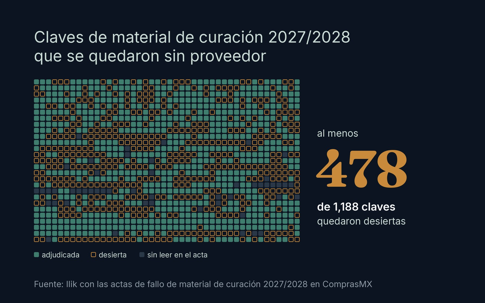
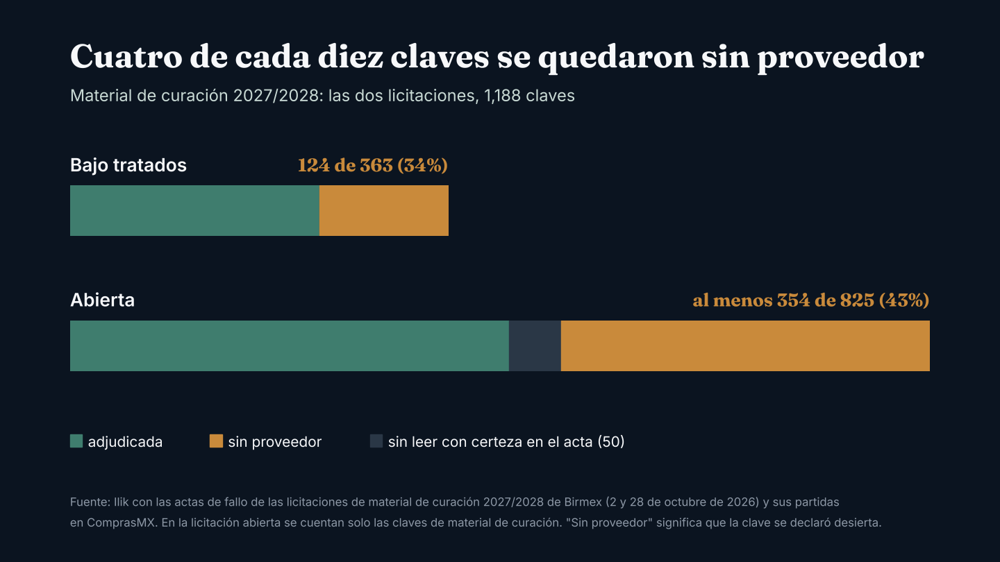
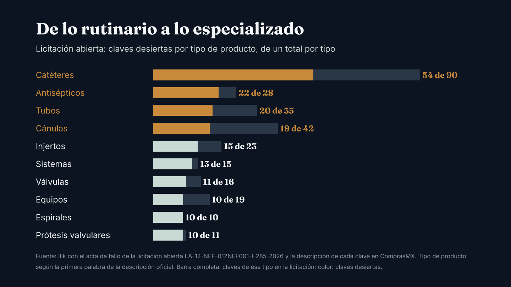
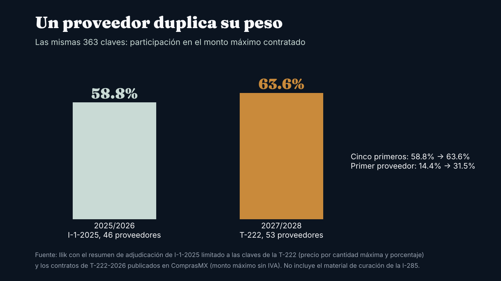

Observatorio / Compras públicas de material de curación
InvestigaciónCuatro de cada diez claves de material de curación se quedaron sin proveedor
Las dos licitaciones con las que el gobierno compró material de curación para 2027 y 2028 dejaron sin proveedor al menos 478 de 1,188 claves. Hay catéteres, sondas, cánulas, antisépticos y agujas, junto con insumos de alta especialidad.

En octubre se conocieron los resultados de las dos licitaciones con las que el gobierno compra material de curación para 2027 y 2028. Entre las dos sumaban 1,188 claves. Al menos 478 se quedaron sin proveedor: cuatro de cada diez.12
En la gran mayoría, el problema no fue el precio: o ninguna oferta cumplió los requisitos técnicos, o no llegó ninguna oferta. Alrededor de una de cada seis cayó en la revisión de precio.12

Dos licitaciones, dos resultados
Esta vez el material de curación no se compró en un solo procedimiento, como en 2025. Se partió en dos licitaciones que no comparten ninguna clave. La primera solo admitía productos de países con tratado comercial con México y tenía 363 claves. La segunda estaba abierta a cualquier origen y tenía 825.12
La primera dejó 124 claves sin proveedor, una de cada tres. La segunda, aunque recibía ofertas de cualquier país, dejó al menos 354: más de cuatro de cada diez.12
La Secretaría de Salud presentó el resultado de la primera como un avance: se contrató 94.5% del volumen previsto, 646 millones de piezas por 12,569 millones de pesos, y las claves contratadas con proveedores mexicanos pasaron de 90 a 173.3 De la segunda informó 673 claves adjudicadas de 755.4 Esa cuenta cuadra con el acta, pero solo incluye las claves que llegaron a la revisión de precio. La licitación abierta tenía 1,169 claves, contando medicamentos e insumos de laboratorio, y 496 quedaron desiertas.2
Las dos lecturas caben en los mismos documentos. La mayor parte del volumen quedó contratada; lo que falta es una parte grande de las claves, muchas de bajo volumen.
De lo rutinario a lo especializado
En la licitación abierta, la lista la encabezan los catéteres: 54 de 90 claves quedaron desiertas. Siguen 22 de 28 claves de antisépticos, 20 de 35 de tubos, 19 de 42 de cánulas y 15 de 23 de injertos. También se quedaron sin proveedor las 10 claves de espirales y 10 de las 11 de prótesis de válvulas cardíacas.2
En la licitación con tratados, las claves desiertas son sobre todo sondas (24), catéteres (20), agujas (14), apósitos (11) y bolsas (10).1

En volumen pesan menos. Lo desierto en la licitación abierta equivale al menos a entre 51 y 126 millones de unidades, frente a 952 millones pedidas como máximo en material de curación. En la licitación con tratados son entre 15.5 y 38.8 millones, frente a 685 millones.256
Muchas sí tenían proveedor en 2025
Al cruzar las listas con la compra principal de 2025 aparece un patrón. En la licitación con tratados, 64 de las 124 claves desiertas tampoco se adjudicaron entonces; las otras 60 sí tenían proveedor y ahora lo perdieron. En la licitación abierta, al menos 148 de las desiertas tuvieron proveedor en 2025.127
A los precios que el gobierno pagó en 2025, la demanda de esas claves que perdieron proveedor vale al menos entre 2,155 y 5,383 millones de pesos en dos años, según se tome la cantidad mínima o la máxima. Pesan sobre todo un equipo para anestesia mixta epidural y subdural (1,042 millones en el máximo), tres claves de charolas de Foley de sistema cerrado (424 millones juntas) y una bomba implantable para infusión de medicamentos (197 millones).567
Además, 684 claves que se licitaron en 2025 no aparecen en ninguna de las dos licitaciones nuevas. La mayoría no se había adjudicado entonces, pero 126 sí, por un monto máximo de 3,309 millones de pesos. Que no estén en la compra consolidada no significa que el gobierno deje de comprarlas: puede hacerlo por adjudicación directa o en procedimientos posteriores.567
Un proveedor duplica su peso
En la licitación con tratados, los cinco proveedores con mayor monto contratado suman 63.6% del máximo. En esas mismas claves, en 2025, los cinco primeros sumaban 58.8%. El cambio fuerte está en el primer lugar: el proveedor que encabeza la lista ya era el primero en estas claves en 2025, con 14.4% del monto; ahora tiene 31.5%.78
La concentración también se ve clave por clave. De las 226 claves adjudicadas cuyo detalle pudimos leer en esa acta, 142 se adjudicaron completas a un solo proveedor.1 Si ese proveedor no surte, no hay segunda fuente contratada.

Lo que significa para un hospital privado
El hospital privado no participa en estas compras, pero le compra a los mismos fabricantes y distribuidores. Con estos datos se pueden plantear tres escenarios.
Primero, el gobierno sale a buscar las claves desiertas. La Secretaría de Salud dijo que las claves no adjudicadas "seguirán su proceso de contratación".3 Si las instituciones las compran por adjudicación directa o en una nueva licitación a inicios de 2027, buscarán a los mismos fabricantes que venden al canal privado. Por número de claves, pesan más los catéteres, las sondas, los antisépticos, las agujas, los tubos y las cánulas. Conviene revisar desde ahora con los proveedores el abasto y el precio del primer trimestre en esas familias.
Segundo, un proveedor grande se retrasa. En la licitación con tratados, un solo distribuidor tiene casi un tercio del monto contratado. Si falla en las entregas, el hueco es de ese tamaño. Si su hospital compra insumos de rutina a ese mismo distribuidor, conviene saber qué parte de su gasto depende de él y si tiene una segunda fuente.
Tercero, el precio público como referencia. En las 132 claves de la licitación con tratados que se pudieron comparar con 2025, el precio ganador quedó, en la mediana, igual que hace dos años. Pero una de cada diez claves bajó a la mitad o menos, y otra de cada diez subió 43% o más.17 La referencia sirve clave por clave, no como promedio.
Qué vigilar
Las actas no indican cómo se cubrirán las claves desiertas. Como las dos licitaciones no comparten claves, lo que quedó desierto en una no se compró en la otra. Lo que sigue es una nueva convocatoria o la adjudicación directa, las dos vías que prevé la ley. Volveremos a esta lista cuando se conozca cuál se usó.
Nota metodológica
Términos. Una clave es el código con el que el Compendio Nacional de Insumos para la Salud identifica cada producto; las de material de curación empiezan con 060. Una clave desierta es la que no se adjudicó a ningún proveedor. La licitación con tratados es la LA-12-NEF-012NEF001-T-222-2026, internacional bajo la cobertura de tratados comerciales; la licitación abierta es la LA-12-NEF-012NEF001-I-285-2026, internacional abierta. Ambas las convocó Birmex. La compra principal de 2025 es la LA-12-NEF-012NEF001-I-1-2025.
Lectura de las actas. Las actas de fallo son documentos escaneados (185 y 536 páginas). Las leímos con reconocimiento óptico de caracteres y validamos cada clave contra el catálogo publicado en ComprasMX. En la licitación con tratados quedan conciliadas las 363 claves. En la abierta, el acta numera 496 claves desiertas en todos los grupos (84 sin ninguna propuesta, 330 que no pasaron la revisión técnica o legal y 82 que cayeron en la revisión económica) y 673 adjudicadas; de las 825 de material de curación identificamos 354 desiertas y 421 adjudicadas, y 50 no se pudieron leer con certeza, por eso las cifras de la abierta son mínimos. Para los tipos de producto se usa la primera palabra de la descripción oficial; se unificaron ANTISÉPTICO y ANTISÉPTICOS. Cinco de las 148 claves que tuvieron proveedor en 2025 no tienen precio de referencia y no entran en el valor. El reparto por motivo dentro del material de curación es aproximado.
Cuenta oficial. La Secretaría de Salud informó 673 adjudicadas de 755 en la licitación abierta. El acta tiene 1,169 claves: 1,169 menos 84 sin propuesta y menos 330 descartadas en la revisión técnica o legal da 755, que son las que llegaron a la revisión de precio; de ellas, 673 se adjudicaron y 82 quedaron desiertas. Dos claves que no son de material de curación, además, se cancelaron.
Comparación con 2025 y valores. Usamos el resumen de adjudicación de la compra principal de 2025. Algunas claves desiertas ahí pudieron adjudicarse después en otros procedimientos de 2025. El valor de la demanda multiplica el precio de la primera fuente adjudicada en 2025 por las cantidades mínima y máxima que piden las instituciones para 2027/2028; es una estimación de tamaño, no un gasto. La comparación de precios usa el precio unitario más bajo adjudicado en cada clave, en 132 claves con precio en ambos ciclos; se revisaron contra la imagen del acta los seis casos con cambios mayores a tres veces, y uno se corrigió. No ajusta por cambios de presentación.
Concentración. En 2025, monto reconstruido con precio, cantidad máxima y porcentaje asignado, limitado a las 363 claves de la licitación con tratados; en 2027/2028, monto máximo de los contratos publicados en ComprasMX. Con el monto reconstruido desde el acta, los cinco primeros suman alrededor de 61%. En siete claves de la licitación con tratados, productos fabricados en Malasia solo se adjudicaron a instituciones distintas del IMSS y del ISSSTE, porque el capítulo de compras públicas del tratado transpacífico no los cubre frente a ese origen; la demanda de esas dos instituciones en esas claves se declaró desierta, aparte de las 124. Correcciones y comentarios: contacto@ilikanalytics.com.
Transparencia. Ricardo Rodríguez Escamilla, fundador de Ilik, trabajó en Laboratorios PiSA hasta julio de 2026. PiSA aparece en la licitación con tratados con contratos por 147.5 millones de pesos, 1.2% del monto máximo, en el lugar 15 de 53 proveedores, y en la licitación abierta con un contrato por 31.5 millones, 0.2% del monto máximo registrado, en el lugar 66 de 129. Este análisis usa solo documentos públicos. Ilik no tiene relación comercial con ninguna de las empresas mencionadas.
Fuentes
- Birmex. Acta de notificación de fallo de la licitación LA-12-NEF-012NEF001-T-222-2026, 2 de octubre de 2026, publicada en ComprasMX. Ver en comprasmx.buengobierno.gob.mx ↩
- Birmex. Acta de notificación de fallo de la licitación LA-12-NEF-012NEF001-I-285-2026, 28 de octubre de 2026, publicada en ComprasMX. Ver en comprasmx.buengobierno.gob.mx ↩
- N+. "SSA hará nuevas licitaciones para comprar el material de curación que falta", 3 de octubre de 2026. Ver en www.nmas.com.mx ↩
- SDP Noticias. "Salud y Birmex adjudican 997.6 millones de piezas de medicamentos para 2027-2028", 29 de octubre de 2026. Ver en www.sdpnoticias.com ↩
- Birmex. Partidas de la licitación LA-12-NEF-012NEF001-T-222-2026, con cantidades mínima y máxima por clave, en ComprasMX. Ver en comprasmx.buengobierno.gob.mx ↩
- Birmex. Partidas de la licitación LA-12-NEF-012NEF001-I-285-2026, con cantidades mínima y máxima por clave, en ComprasMX. Ver en comprasmx.buengobierno.gob.mx ↩
- Birmex. Resumen de adjudicación de la licitación LA-12-NEF-012NEF001-I-1-2025, en ComprasMX. Ver en comprasmx.buengobierno.gob.mx ↩
- Birmex. Contratos de la licitación LA-12-NEF-012NEF001-T-222-2026, monto máximo sin IVA, en ComprasMX. Ver en comprasmx.buengobierno.gob.mx ↩

Fundador de Ilik. Estadístico de formación, con más de ocho años al frente de la inteligencia comercial del canal hospitalario privado en la industria farmacéutica.